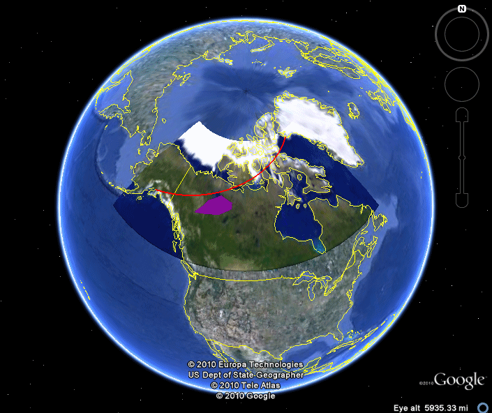
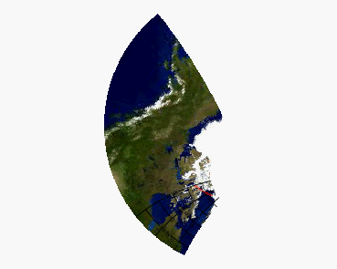

If you create an Image graphic by projecting a graphic file onto a map, you can convert the IDL graphic into other graphic types, including the Open Geospatial Consortium's Keyhole Markup Language (KML). KML is an XML-based schema that visualizes geographic data and annotations on Internet-based two-dimensional maps and three-dimensional Earth browsers (including Google Earth™).
This topic shows how to use a graphic's Save method to convert an Image graphic to a KML file.
In this example we project a portion of a JPG image of the world onto a globe, and add a line showing a research airplane's flight path between Thule Air Force Base in Greenland and Alaska's Elmendorf Air Force Base. We also add a polygon to the Image graphic showing the magnetic anomaly detected during the flight. Finally, we save this Image graphic with the added annotations to a KML file and load the file into Google Earth™.

This code creates a KML file that, when loaded into Google Earth™, creates the image shown above. You can copy the entire block and paste it into the IDL command line to run it.
; Determine the path to Day.jpg in the IDL distribution
world = FILEPATH('Day.jpg', SUBDIRECTORY=['examples','data'])
; Create the arctic Image graphic.
arctic = IMAGE(world, LIMIT=[51, -161, 78, -52], $
GRID_UNITS=2, IMAGE_LOCATION=[-180,-90], $
IMAGE_DIMENSIONS=[360,180], MAP_PROJECTION='Stereographic', $
/CURRENT, NAME='Arctic Research')
; Add a polyline annotation to the graphic connecting Thule
; to Elmendorf
polyline = POLYLINE([[-149.81,61.25],[-68.70,76.53]], $
/DATA, COLOR='red', NAME='Thule to Elmendorf', $
THICK=2, TARGET=arctic)
; Add the magnetic anomaly polygon
x = [-119.017, -124.82, -129.22, -118.23, -113.03, -113.183]
y = [66.25, 64.65, 61.43, 62.3, 63.783, 65.11]
polygon = POLYGON(x, y, /DATA, COLOR='purple', $
FILL_COLOR='purple', FILL_TRANSPARENCY=0, $
NAME='Magnetic Anomaly', TARGET=arctic)
; Save the Image graphic as a KML file
arctic.SAVE, 'arctic_map.kml'
In this example we start with the two-dimensional Day.jpg file (included in the IDL distribution):
; Determine the path to Day.jpg in the IDL distribution
world = FILEPATH('Day.jpg', SUBDIRECTORY=['examples','data'])
We then call the IMAGE function,which does the following things:
| • | Maps the two-dimensional Day.jpg using a stereographic projection |
| • | Defines a polygon on the globe using the two opposing corner coordinates |
| • | Maps the polygon back to a two-dimensional surface |
; Create the arctic Image graphic.
arctic = IMAGE(world, LIMIT=[51, -161, 78, -52], $
GRID_UNITS=2, IMAGE_LOCATION=[-180,-90], $
IMAGE_DIMENSIONS=[360,180], MAP_PROJECTION='Stereographic', $
/CURRENT, NAME='Arctic Research')
Next we add a polyline annotation representing the research airplane's flight path, and a polygon showing the magnetic anomaly detected on the flight:
; Add a polyline annotation to the graphic connecting Thule
; to Elmendorf
polyline = POLYLINE([[-149.81,61.25],[-68.70,76.53]], $
/DATA, COLOR='red', NAME='Thule to Elmendorf', $
THICK=2, TARGET=arctic)
; Add the magnetic anomaly polygon
x = [-119.017, -124.82, -129.22, -118.23, -113.03, -113.183]
y = [66.25, 64.65, 61.43, 62.3, 63.783, 65.11]
polygon = POLYGON(x, y, /DATA, COLOR='purple', $
FILL_COLOR='purple', FILL_TRANSPARENCY=0, $
NAME='Magnetic Anomaly', TARGET=arctic)
The resulting Image graphic shows the polygon section of the globe projected stereographically:

Finally, we save the Image graphic as a KML file using the Image object's Save method and load the file into Google Earth™, where it is superimposed upon a globe.
| • | LIMIT - defines the region of the initial JPG to be projected. The coordinates define a two-dimensional square, in the format [Latmin, Lonmin, Latmax, Lonmax]. |
| • | GRID_UNITS - the units for the Image grid. In this case, degrees are used. |
| • | IMAGE_LOCATION - the location of the Image graphic's lower-left pixel. Since the grid units are degrees, these coordinates are as well. The given location of [-180, -90] implies that the center of the Image is at the point where the Greenwich meridian intersects the equator. |
| • | IMAGE_DIMENSIONS - the dimensions [width, height] of the resulting Image graphic, in data units (degrees, in this case). |
| • | MAP_PROJECTION - the Image graphic data is transformed using this projection. In this case, we are using a stereographic projection. |
| • | CURRENT - creates the Image graphic in the current window. |
| • | NAME - a name for the graphic that can be used later to retrieve it. |
| • | DATA - specifies that the polyline is drawn in the data space. In this case, the coordinates are specified in degrees. |
| • | COLOR - the line color. |
| • | NAME - a name for the annotation that can be used later to retrieve it. |
| • | THICK - the line thickness. |
| • | TARGET - the graphic object to which to attach the annotation. |
| • | FILL_COLOR - the polygon interior color. |
| • | FILL_TRANSPARENCY - the percent transparency of the polygon interior. We use the value 0, indicating the fill is opaque. |
| • | Save - This method is common to all IDL graphics, and allows you to save the contents of the graphic in one of many common graphic file formats. The file format of the saved file is determined from the Filename file suffix. See Saving Graphics for a list of supported graphic file formats. |

In this example we create a map of the world using the Mollweide projection, and overplot that map with two 3-D contour plots (one that displays filled contour levels with different colors, and one that just shows the contour boundaries). We then use the CONTOUR function's SAVE method to create a KML file and load the file into Google Earth™.
This code creates a KML file that, when loaded into Google Earth™, creates the image shown above. You can copy the entire block and paste it into the IDL command line to run it.
; Create the contour data
; x-coordinates of the Z data (-180 to 180)
longitude = FINDGEN(360) - 180
; y-coordinates of the Z data (-90 to 90)
latitude = FINDGEN(180) - 90
; A 2-D array containing the contour data
cntrdata = SIN(longitude/30) # COS(latitude/30)
; Create a map graphic as a canvas for the contour plot
worldmap= MAP('Mollweide', LIMIT=[-90,-180,90,180])
; Overplot a ten-level contour plot, where each contour level is
; filled with a color. The levels are 50% opaque and the colors
; are taken from the Rainbow color table
cntr1 = CONTOUR(cntrdata, longitude, latitude, $
GRID_UNITS=2, N_LEVELS=10, RGB_TABLE=13, /OVERPLOT, $
/FILL, TRANSPARENCY=50)
; Overplot another contour plot, this time displaying only
; contour boundaries. These boundaries are two points thick
; and are colored with the Rainbow + White color table
cntr2 = CONTOUR(cntrdata, longitude, latitude, $
GRID_UNITS=2, N_LEVELS=10, RGB_TABLE=39, $
/OVERPLOT, C_THICK=[2])
; Save the graphic as a KML file
worldmap.SAVE, 'contour_map.kml'
At this point you can load contour_map.kml into Google Earth™, and the map and overplotted contour plots are projected on a globe.
| • | GRID_UNITS - the units for the contour grid. For this example, degrees are used. |
| • | OVERPLOT - place the new graphic on top of the existing graphic in the current window. |
| • | N_LEVELS - the number of contour levels to generate. |
| • | FILL - directs IDL to fill the contours. |
| • | RGB_TABLE - the value of the predefined IDL color table to use for the level or boundary colors. |
| • | TRANSPARENCY - an integer between 0 and 100 that specifies the percent transparency of the contour level. |
| • | C_THICK - the thickness (between 0 and 10 points) of the contour boundaries. |
| • | Save - This method is common to all IDL graphics, and allows you to save the contents of the graphic in one of many common graphic file formats. The file format of the saved file is determined from the Filename file suffix. See Saving Graphics for a list of supported graphic file formats. |
| • | Saving Graphics |
| • | Save Method |
| • | CONTOUR |